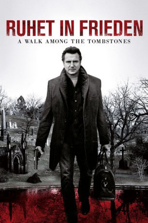

gesehen am 18.03.2015
gesehen am 18.03.2015Alternativ: A Walk Among the Tombstones gesehen am 18.03.2015
 
 IMDB-Wertung: 6.5 / 10
IMDB-Wertung: 6.5 / 10  Metascore:
Metascore: 
Matthew Scudder ist ein ehemaliger Cop und trockener Alkoholiker. Er verbringt seinen Ruhestand damit, seinen Freunden für Geld Gefälligkeiten zu erweisen. Diese führen ihn oft tief in die Unterwelt von New York. So wird er auch angeheuert, als es im Big Apple zu einer ganzen Reihe von Entführungsfällen kommt, die die Polizei machtlos erscheinen lässt. Zögerlich hilft er dabei auch einem Heroinschmuggler, dessen Frau entführt und bestialisch ermordet wurde. Scudder ist sich nicht zu schade, die Grenzen des Gesetzes zu übertreten, um Gerechtigkeit walten zu lassen und hat als unlizensierter Privatermittler Zugang zu Bereichen, die der Polizei stets verschlossen sind. Während er die Täter dieser schrecklichen Verbrechen jagt, geht er selbst an die Grenze des moralisch Vertretbaren und droht so, selbst zu einem der Monster zu werden, die er eigentlich jagt.
Jahr: 2014
Dauer: 114 Minuten
FSK: 16
Land: USA Studio: Universal PicturesTonspuren: DTS - ,
Untertitel: Deutsch,
Auflösung: 1080p (1920x808) Größe: 5580 MB
Genre: Krimi, Drama, Mystery, Thriller
Regisseur: Scott Frank
Drehbuch: Lawrence Block, Scott Frank
Soundtrack: Carlos Rafael Rivera
Darsteller:
 Liam Neeson als Matt Scudder
Liam Neeson als Matt Scudder Maurice Compte als Danny Ortiz
Maurice Compte als Danny Ortiz Patrick McDade als Bar Owner
Patrick McDade als Bar Owner Hans Marrero als Dominican Banger #2
Hans Marrero als Dominican Banger #2 Laura Birn als Leila Alvarez
Laura Birn als Leila Alvarez David Harbour als Ray
David Harbour als Ray Adam David Thompson als Albert
Adam David Thompson als Albert Boyd Holbrook als Peter Kristo
Boyd Holbrook als Peter Kristo Dan Stevens als Kenny Kristo
Dan Stevens als Kenny Kristo Ólafur Darri Ólafsson als Jonas Loogan
Ólafur Darri Ólafsson als Jonas Loogan Mark Consuelos als Reuben Quintana
Mark Consuelos als Reuben Quintana Genevieve Adams als Waitress - The Flame
Genevieve Adams als Waitress - The Flame Sebastian Roché als Yuri Landau
Sebastian Roché als Yuri Landau Mike Carlsen als Flannel Shirt
Mike Carlsen als Flannel Shirt Leon Addison Brown als Stover
Leon Addison Brown als Stover Jeremie Harris als Baller #2
Jeremie Harris als Baller #2 Dennis Jay Funny als AA Speaker
Dennis Jay Funny als AA Speaker Whitney Able als Twelve Step Girl
Whitney Able als Twelve Step Girl Kevin Cannon als AA Alcoholic , uncredited
Kevin Cannon als AA Alcoholic , uncredited Joe Lanza als Male Nurse , uncredited
Joe Lanza als Male Nurse , uncredited Gregg Micheals als AA Member , uncredited
Gregg Micheals als AA Member , uncredited John Mitchell als Charlie / Bartender , uncredited
John Mitchell als Charlie / Bartender , uncredited Toshiko Onizawa als Witness , uncredited
Toshiko Onizawa als Witness , uncreditedDatei: X:\2014(N-Z)\Ruhet in Frieden - A Walk Among the Tombstones (2014, FSK16, 1920x808).mkv seit 08.03.2015
Festplatte: HD 2013(I-Z)-2014(A-Z)
 Es gibt insgesamt 163 Filme in der Gruppe '2014(N-Z)'
Es gibt insgesamt 163 Filme in der Gruppe '2014(N-Z)'